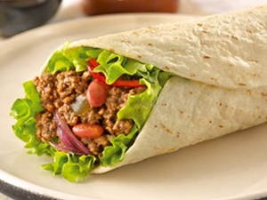

Burrito mexicano

Carne picada
Lechuga
Queso
Wrap
Nata fresca agria
Sazonador
45 minutos
Sazonamos la carne picada con especias; paprika,..al gusto, podemos añadir también un sazonador de burritos,fajitas o tacos
Cocinamos la carne previamente sazonada en la sartén a fuego lento y retiramos
Picamos la lechuga, tiene que estar muy picada y retiramos a otro plato
Cogemos el wrap y le añadimos la carne, la lechuga y una cucharada de nata fresca agria
Cerramos el burrito enrollandolo y presionando para que no se salga el contenido
Pasamos el burrito por la sartén con una gota de aceite para que se gratine
Y por último,disfrutamos de nuestro delicioso burrito :)